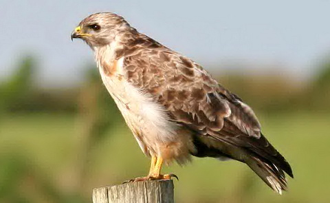
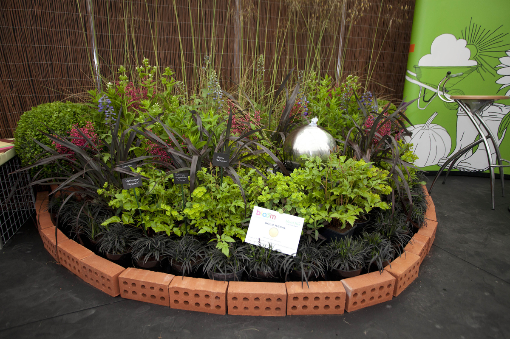
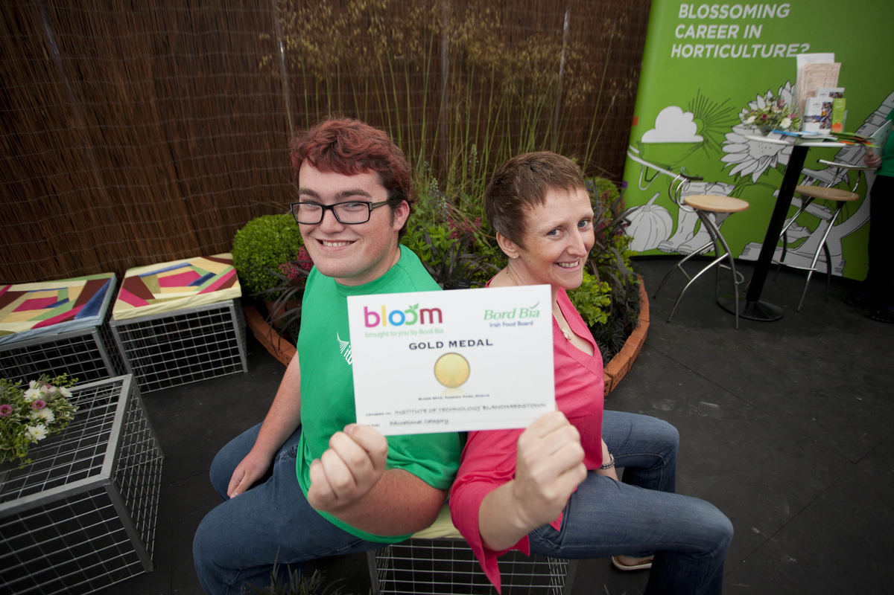

Institute of Technology Blanchardstown
The Ecology System is very important to ITB and the surrounding area. Home to an abundance of life, such as Blackbirds, thrushes, chaffinches, starlings, robins, foxes, mice and other small mammals. The life growing and surviving in the ITB campus serves a very important role in the environment they live in.

Campus Life
Our campus is an important amenity resource for the local communities, but also provides habitats for many species of flora and fauna.
Buzzards and other predators visit the rough grassland areas to hunt.
The abundant vegetation of these meadows provides the ideal habitat for rabbits

The Ecology
The area around the college is bursting with flora and fauna. The rich soil helps keep the little organisms doing their job and makes for beautiful grass n flora. Ash trees are very common around campus, home to various animals, many of the trees as old as 20 years!

Bloom
ITB has it's very own Horticulture Degree course, where students learn all about the living organisms out in the environment the college is in. Students learn about the role of the flora and fauna they observe, and the impact they have, and just how much we really rely on them to maintain the campus environment.